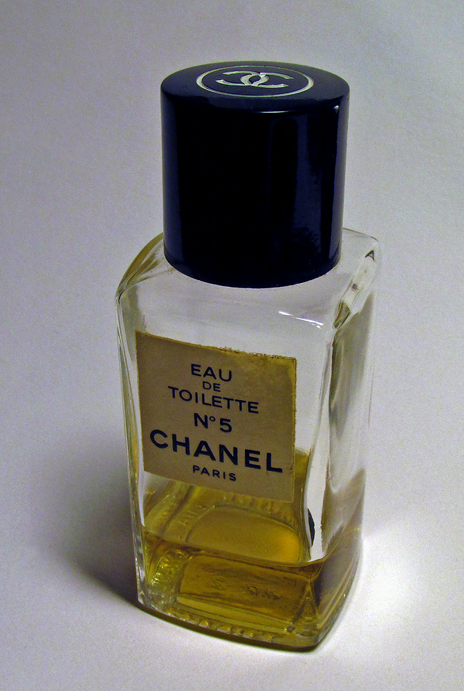

Foto: Javier Velez / Wikimedia Commons · CC BY-SA 3.0
Perfumes frescos para el calor de Costa Rica
Cítricos, notas aromáticas y perfiles tropicales para días cálidos y húmedos.
Leer artículoUna selección para descubrir
Explorá fragancias árabes que ganan espacio en Costa Rica y clásicos de diseñador. Cada ficha muestra un precio de referencia y su fuente.
Proyecto demostrativo · No se procesan pedidos ni pagos.

El catálogo
Una muestra inicial basada en reportes de perfumerías y precios publicados por comercios de Costa Rica.
Precios de referencia. Son importes observados en otras tiendas, no precios de venta de Tu Perfume CR. La fuente y la fecha aparecen en cada ficha; confirmá disponibilidad y precio con el comercio.
Cargando fragancias…
Cargando el catálogo…
Del blog
Guías prácticas para el calor, la noche y las distintas ocasiones. Las recomendaciones describen perfiles; la mejor elección depende de lo que te guste en tu piel.
Foto: Javier Velez / Wikimedia Commons · CC BY-SA 3.0
Cítricos, notas aromáticas y perfiles tropicales para días cálidos y húmedos.
Leer artículo
Foto: Shakko / Wikimedia Commons · CC BY-SA 3.0
Tres perfiles del catálogo para cenas, eventos y salidas, con consejos para aplicar sin excederse.
Leer artículo
Foto: Jonn Leffmann / Wikimedia Commons · CC BY 3.0
Una forma sencilla de pensar en perfumes para todos los días, regalos y momentos especiales.
Leer artículoInvestigación local
Un reporte periodístico recoge los modelos más vendidos informados por una perfumería local. Los comparadores muestran que un mismo perfume puede variar de precio entre comercios.